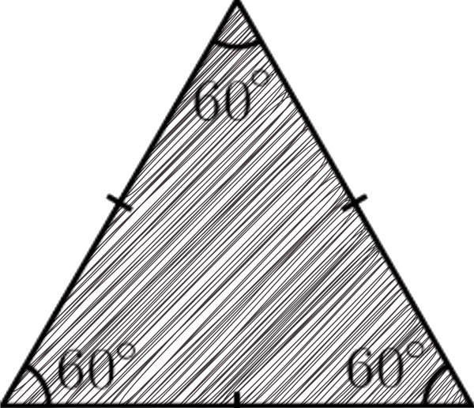

EQUILATERO
🔺 ¿Qué es un triángulo equilátero?
Es un triángulo que tiene los tres lados exactamente iguales y, por lo tanto, los tres ángulos internos también miden lo mismo: 60° cada uno. Esto lo convierte en un polígono regular.
📐 Propiedades clave
Lados congruentes: todos miden lo mismo.
Ángulos internos iguales: 60° cada uno.
Simetría total: cualquier línea trazada desde un vértice al lado opuesto (altura, mediana, bisectriz o mediatriz) coincide en una sola línea.
Centro único: el ortocentro, baricentro, incentro y circuncentro están en el mismo punto.
📏 Fórmulas útiles
Perímetro:
𝑃
=
3
×
𝐿
Altura:
ℎ
=
3
2
×
𝐿
Área:
𝐴
=
3
4
×
𝐿
2
Donde
𝐿
es la longitud de un lado.
🧠 Curiosidades
Si divides un triángulo equilátero por una altura, obtienes dos triángulos rectángulos iguales.
Es el único triángulo que es a la vez equilátero, isósceles y acutángulo.
